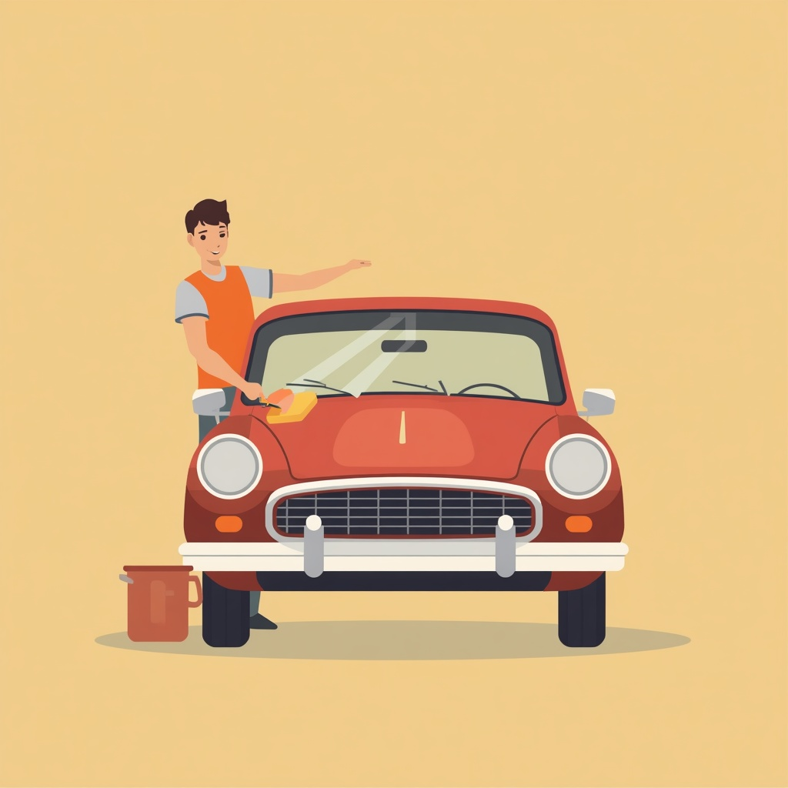
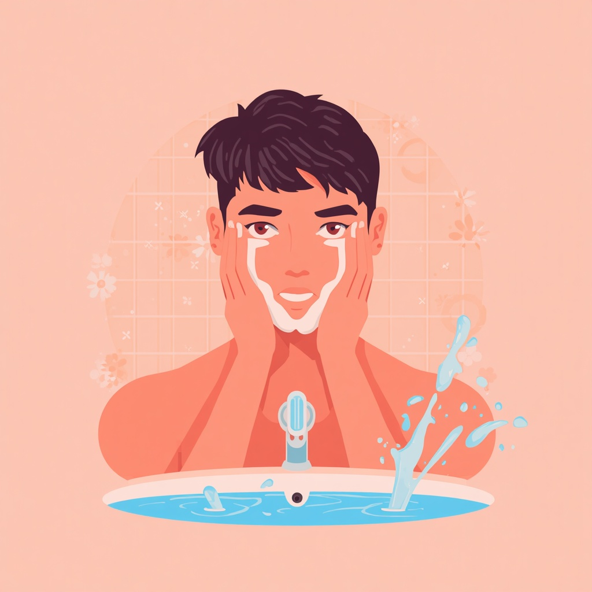

I Verbi Riflessivi
Возвратные глаголы в итальянском языке — легко и понятно!
Осмысление · Cosa noti?
Посмотрите на картинки и сравните два действия. В чём разница между Lavare и Lavarsi?

LAVARE
«мыть» (кого-то / что-то другое)
Marco lava la macchina.
Marco lava la macchina.

LAVARSI
«мыться» (действие направлено на себя)
Marco si lava il viso.
Marco si lava il viso.
Конструктор глагола · Costruisci la forma!
Нажимайте на местоимения (io, tu, lui...) и наблюдайте, как меняется частица перед глаголом. В русском ей соответствуют суффиксы -ся / -сь, а в итальянском это отдельное слово перед спрягаемым глаголом: mi lavo.
io
mi
lavo
Проверь себя · Mettiti alla prova!
Выберите правильную форму глагола:
1. Ogni mattina io _______ (lavarsi) le mani.
2. Noi _______ (vestirsi) eleganti per la festa.
3. Marco e Elena _______ (chiamarsi) ogni giorno.
Правило · La Regola
В неопределенной форме возвратные глаголы заканчиваются на -arsi, -ersi или -irsi: lavarsi (мыться), sedersi (садиться), vestirsi (одеваться). При спряжении возвратная частица становится отдельным словом, ставится перед глаголом и изменяется по лицам: mi lavo («я моюсь»).
| Местоимение | Частица | Пример (Lavarsi) | Перевод |
|---|---|---|---|
| io | mi | mi lavo | я моюсь |
| tu | ti | ti lavi | ты моешься |
| lui, lei | si | si lava | он/она моется |
| noi | ci | ci laviamo | мы моемся |
| voi | vi | vi lavate | вы моетесь |
| loro | si | si lavano | они моются |